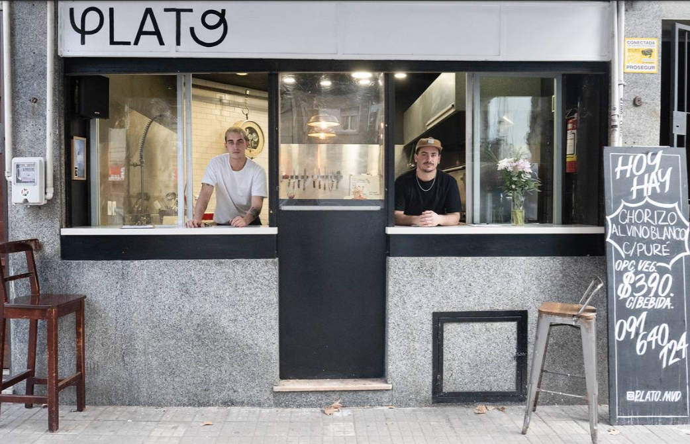
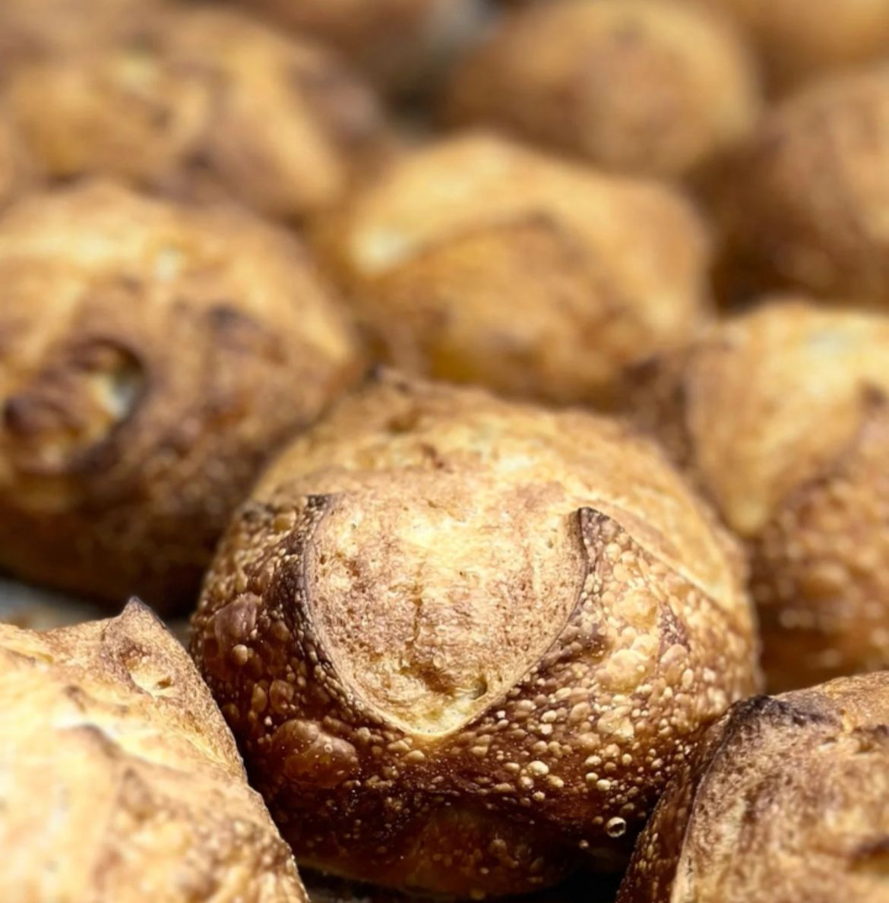
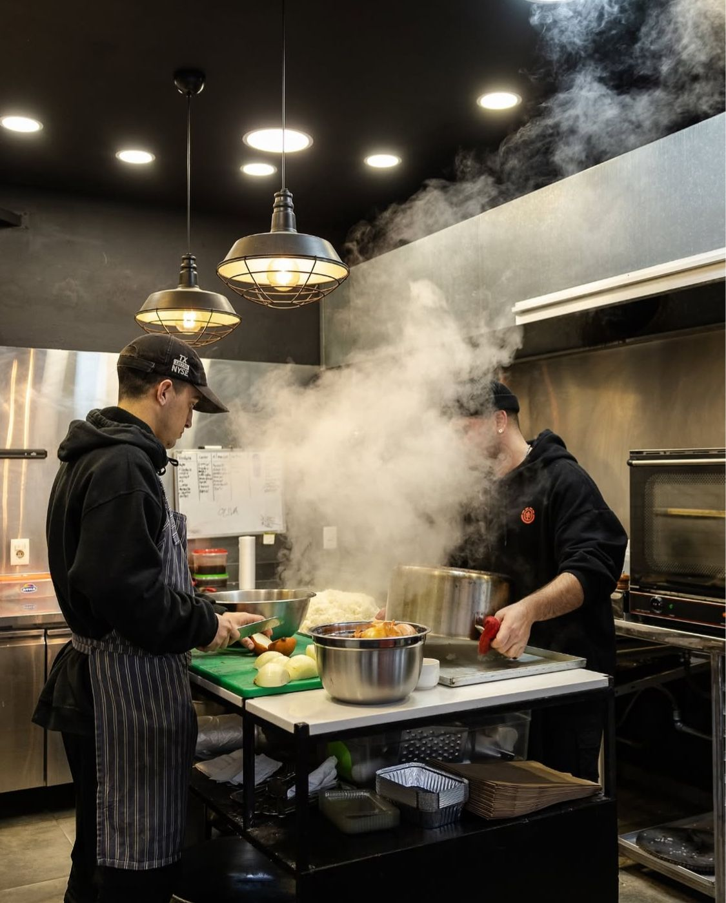
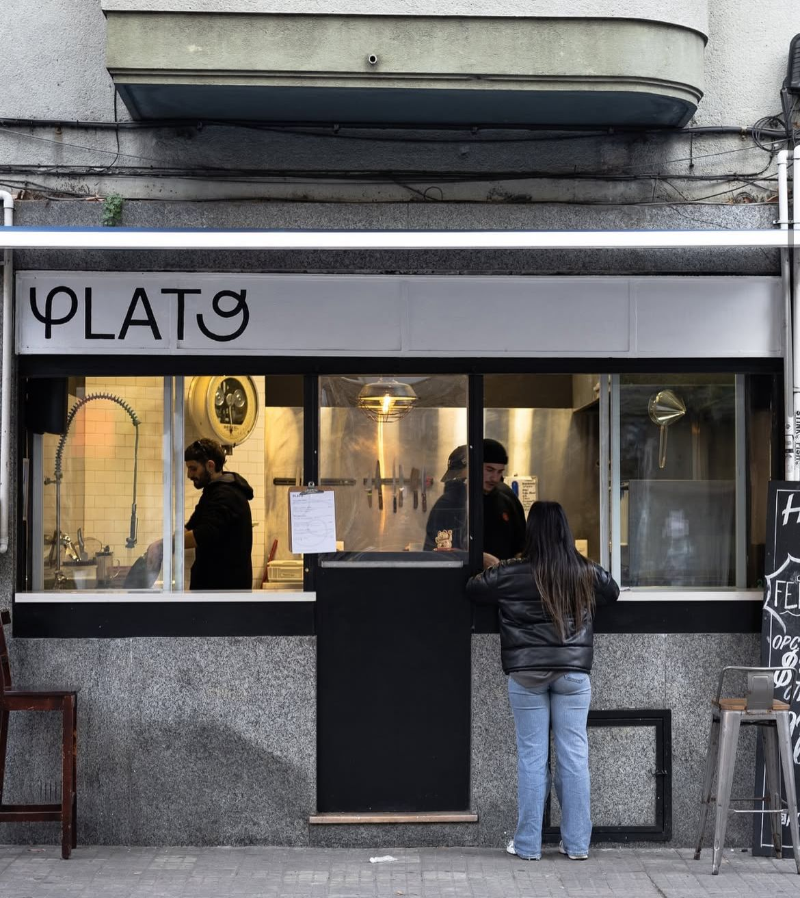
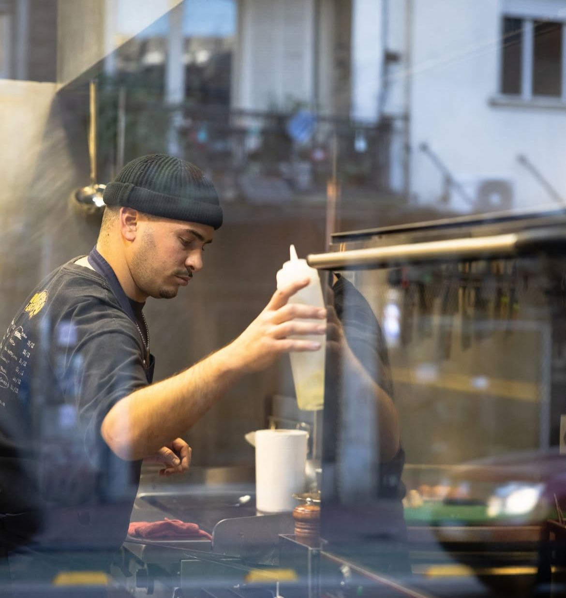

En PLATO entendemos lo gourmet no como lujo, sino como atención al detalle. Cocinamos para todos los días, pero con la seriedad con la que se piensa una carta: producto, técnica, equilibrio y constancia.

La propuesta gastronómica de PLATO parte de una idea simple: cocinar bien, todos los días. Eso implica tomar decisiones conscientes: elegir productos, respetar temporadas, cocinar con técnica y servir algo que esté pensado, no improvisado.
Buscamos una cocina clara: sabores definidos, combinaciones equilibradas y un resultado consistente. Menos ruido, más criterio.

El menú cambia todos los días. Trabajamos para que la variedad sea real: técnicas distintas, combinaciones distintas y una idea de plato que se renueva.
Desde el inicio, la regla fue clara: evitar repetir. Eso mantiene el almuerzo interesante y nos obliga a cocinar con creatividad responsable: no por sorprender, sino por proponer algo bien armado.

Cocinar con estación no es una moda: es la forma más directa de lograr sabor. Trabajamos con ingredientes que están en su mejor momento y armamos el menú en función de eso.
Esto nos permite mantener el plato vivo: cambia el producto, cambia la guarnición, cambian los contrastes. La temporada define el camino.

En PLATO la técnica está al servicio del plato. No buscamos complejidad por complejidad: buscamos precisión. Cocciones correctas, salsas bien trabajadas, texturas que sumen y presentaciones limpias.
Lo gourmet, para nosotros, se nota en lo que no se grita: en el punto de cocción, en la temperatura de servicio, en el balance de sal y acidez, en el respeto por el producto.

Cocinamos para que comer afuera sea simple, rico y bien hecho. Menú diario, producto de estación, y una propuesta que se renueva.
San José 1186 · Montevideo · Lunes a viernes